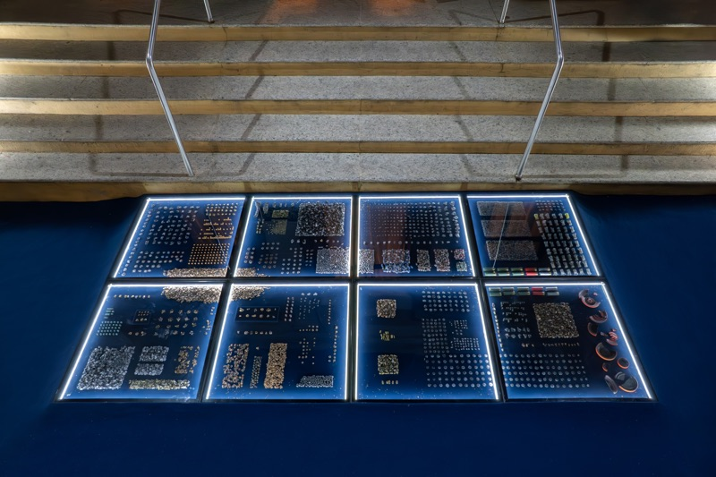
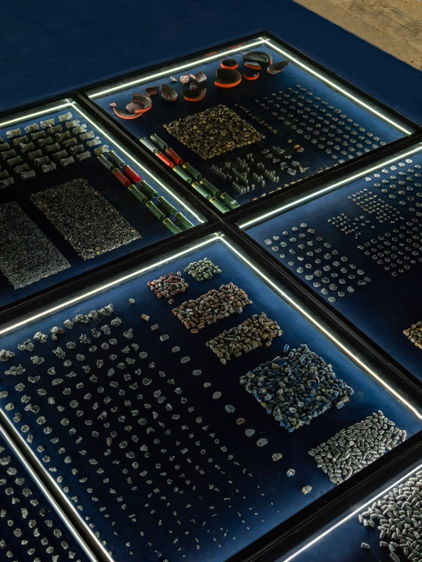
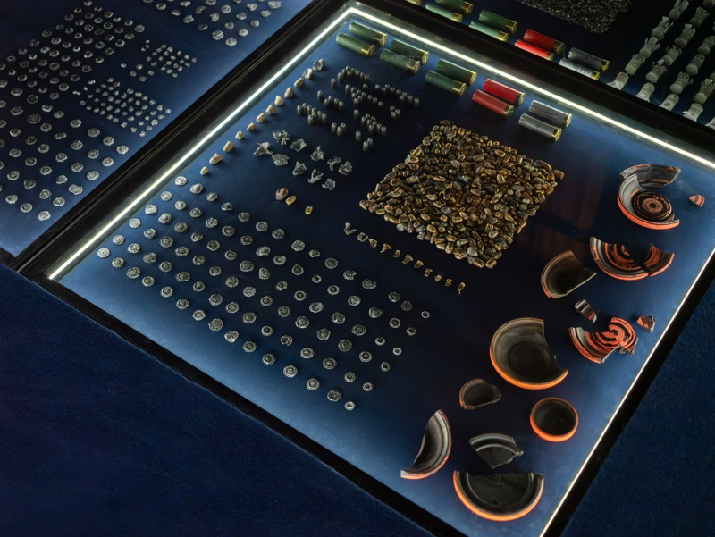
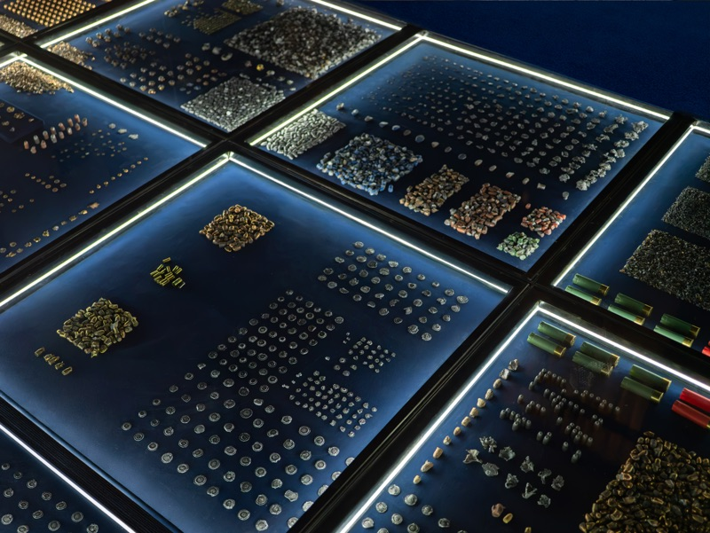
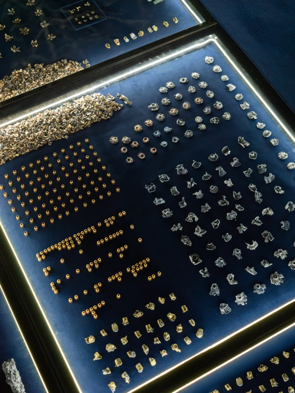
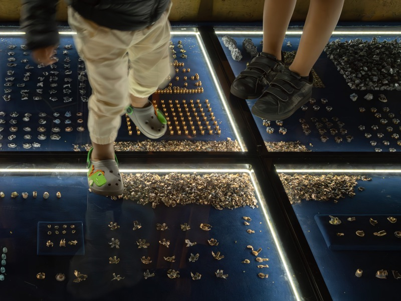

Play with sound to watch from the beginning.
Venice
Video 1 min 12 s
About the video
Video documentation of Juliana Galbetti’s work in Venice, with close views of surfaces, objects and fragments.
Open MP4 videoThis video is unavailable here. Open the MP4 file.
Work
Arqueologia Fabular
7th Bienal do Sertão
Photos: Paola y Renato












Contact
Juliana Galbetti
São Paulo, Brazil